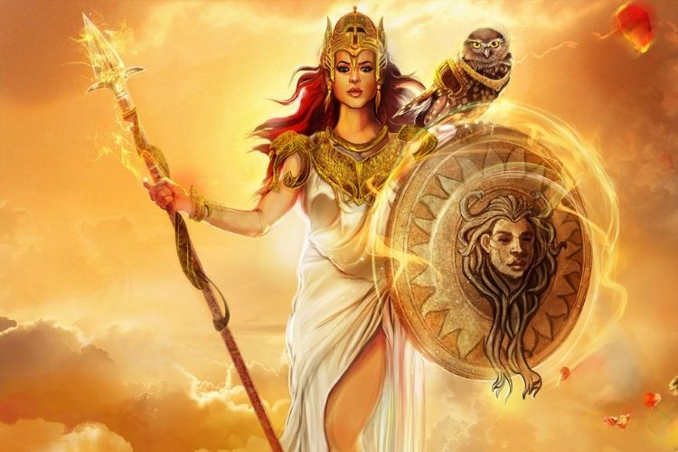

Athena
DEESSE DE LA GUERRE ET DE LA SAGESSE
-
Nom romain : Minerve
Etymologie : La « tête»
Surnom : La vierge
Père : Zeus
Mère : Metis
-
Athéna est la déesse préférée des athéniens et pour cause c’est une des divinités les plus complètes,
puisqu’on lui attribue la sagesse, la stratégie, la guerre, les arts et les artisans, la raison, les lettres, la pensée …
-
-
Un jour, une prédiction avertit Zeus Zeus que si sa maîtresse Métis, enceinte avait un garçon il le détrônerait.
Zeus Zeus décida, afin d’évité cette menace de manger Métis, cette dernière étant transformé en mouche.
Mais quelques mois plus tard, il a attrapé une migraine insupportable et a demandé à Héphaïstos de diviser
son crâne en deux. La petite Athéna en jaillit, déjà tout armée, avec sa lance et son casque orné !
-
Athéna a une chouette pour animal sacré : comme ce rapace a la réputation de tout voir, y compris dans
l'obscurité, il est le symbole parfait de la connaissance. Il était également messager
pour sauver le héros. Aujourd'hui, les pièces grecques de 1 € porte encore ce symbole.
-
Les athéniens organisèrent un concours pour savoir qui serais la divinité fétiche de leur ville.
Poséidon , sûr de lui, créa le cheval… Les hommes furent passionnés. Vint le tour d’Athéna elle frappa
la terre et un modeste olivier poussa. Les hommes étaient déçus tandis que les femmes elles, comprirent
l’utilité de l’olivier, et firent basculer le vote en faveur d’Athéna.